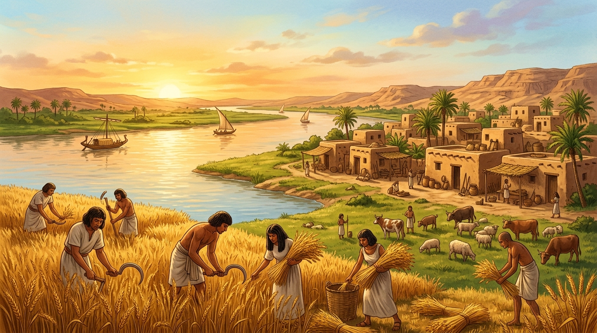
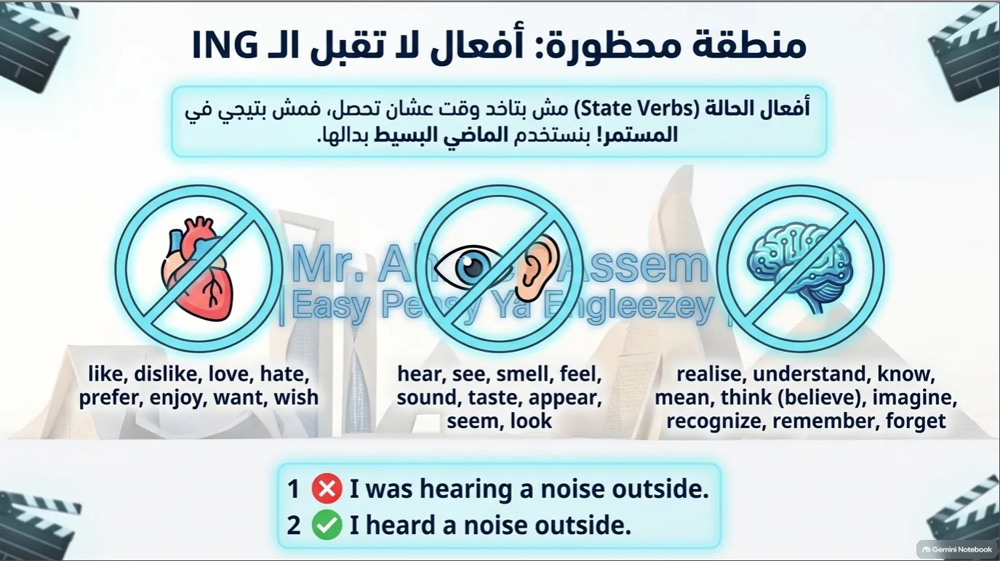
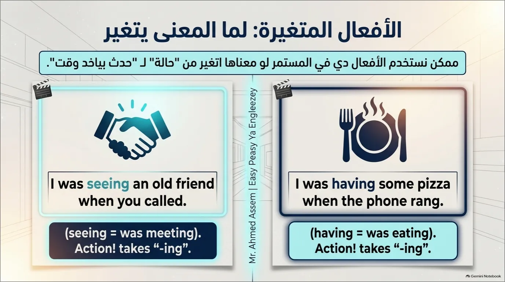
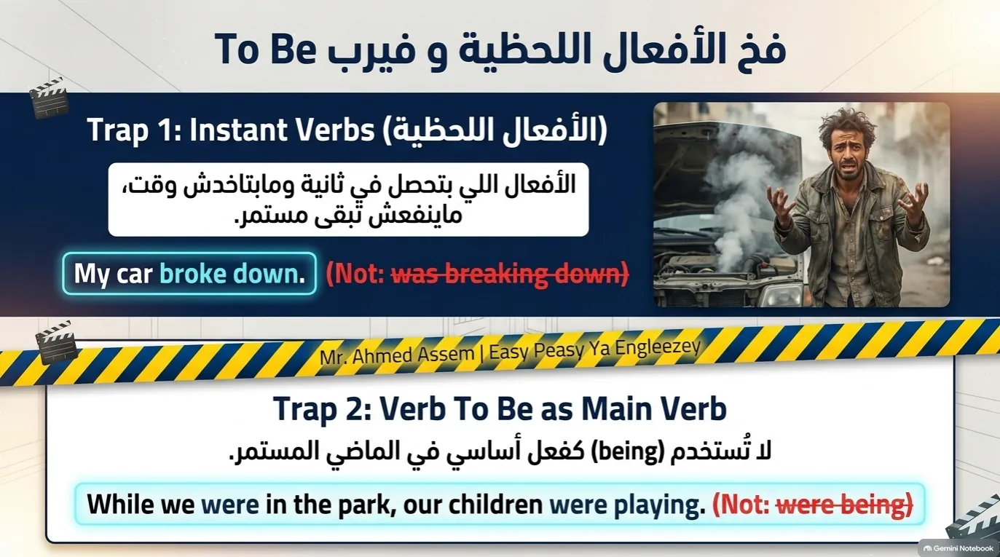
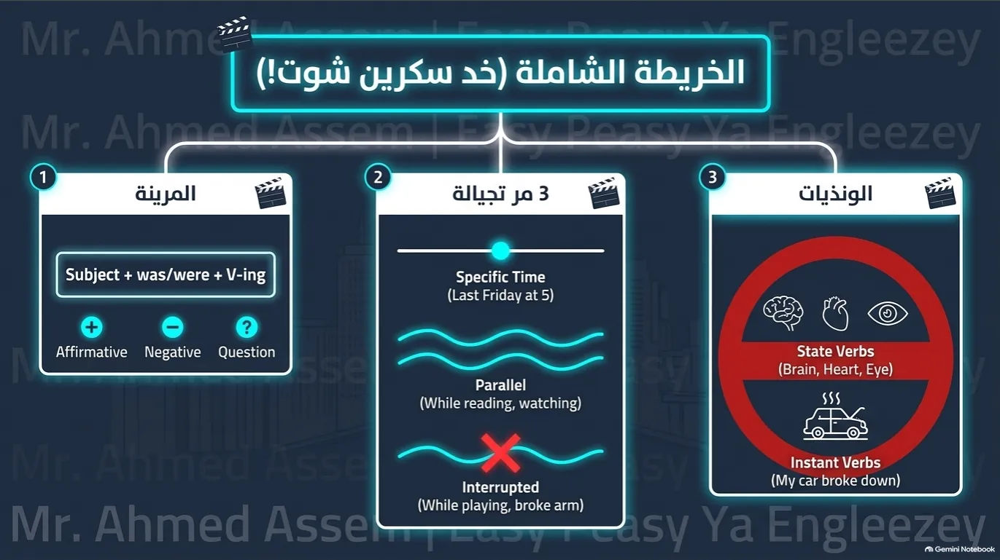
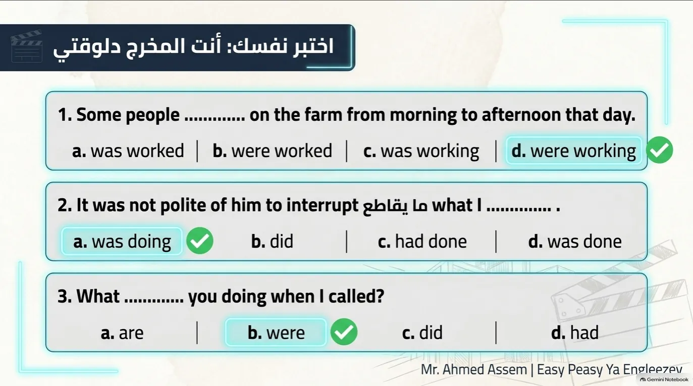
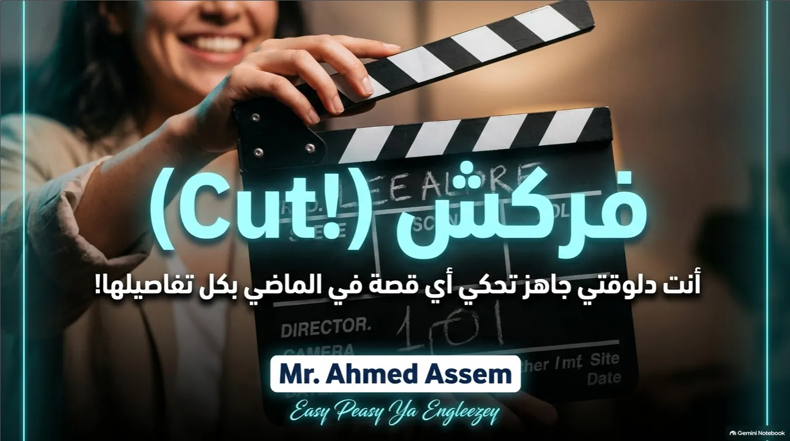

Sec 1 (الصف الأول الثانوي)⚡ Unit 1: Egypt's Heritage • Lesson 3
Lesson 3: Now Starts Long Ago & Past Tenses Cinema
القصة المصورة التفاعلية (Storybook: Now Starts Long Ago)، المحاضرة المرئية، شرائح سينما الماضي المستمر التفاعلية (15 شريحة كاملة)، شفرات التكوين والاستخدام، صيغ العادات ومطبات الامتحانات، واختبار شامل 🎯
📚 قصة الدرس ونصوص الاستماع (SB Page 17 - Now Starts Long Ago)
💡 استوديو القراءة والقصة التفاعلية: استمع واقرأ نص الاستماع والقراءة للدرس الثالث (Now Starts Long Ago). يمكنك تشغيل القارئ الصوتي التلقائي (Auto Storyteller) للاستماع للنص ومتابعة الترجمة والمفردات اللغوية، أو النقر على بطاقات الكلمات أدناه للاستماع الفردي.
🌟 أهم مفردات نص الاستماع والقراءة (Key Reading Vocabulary • SB Page 17)14 كلمة وتعبير مع النطق
ways (n)
طرق / أساليب
depended mainly on (v)
اعتمد أساساً على
growing crops (n)
زراعة المحاصيل
raising animals (n)
تربية الحيوانات
survival (n)
البقاء على قيد الحياة / نجاة
passed down (phr v)
ينقل / يورث عبر الأجيال
daily practices (n)
ممارسات وعادات يومية
metal tools (n)
أدوات معدنية
trade routes (n)
طرق التجارة
distant (adj)
بعيد / ناءٍ
complex (adj)
معقد / متشابك
access information (v)
يصل إلى المعلومات
with a single click (adv)
بضغطة واحدة / بنقرة زر
wisdom (n)
حكمة / دراية
🖼️ Scene 1 of 4

Early human communities living close to nature, farming crops, and raising animals for survival
📖 Now Starts Long AgoPage 1 / 4
Scene 1: Life Long Ago & Harmony with Nature
Long ago, people lived in ways very different from today. They depended mainly on the land, growing crops, and raising animals for survival. Families lived close to nature, often using simple tools and working together to produce what they needed. Communities were small, and traditions were passed down through stories, songs, and daily practices.
💡 الترجمة:
منذ زمن بعيد، عاش الناس بطرق مختلفة تماماً عن اليوم. كانوا يعتمدون بشكل أساسي على الأرض، وزراعة المحاصيل، وتربية الحيوانات للبقاء على قيد الحياة. عاشت العائلات قريبة من الطبيعة، وغالباً ما استخدمت أدوات بسيطة وعملت معاً لإنتاج ما تحتاج إليه. وكانت المجتمعات صغيرة، وتوارثت الأجيال التقاليد عبر القصص والأغاني والممارسات اليومية.
⚡ الدليل الشامل وشرح قواعد الماضي البسيط والماضي المستمر (Grammar Masterclass)
💡 استوديو القواعد المتكامل: شاهد المحاضرة المرئية التفصيلية، وتنقل بين شرائح سينما الماضي المستمر الـ 15 مع التكبير عالي الدقة، وراجع ملخص القواعد ومطبات الامتحان التكتيكية مع مستر أحمد عاصم 🎯.
🎥 المحاضرة المرئية: شرح الماضي البسيط والماضي المستمر (Video Lecture)
✨ شرح أسرار التكوين والاستخدام والروابط الزمنية مع مستر أحمد عاصم
🎬 الشريحة 10: إيقاف الكاميرا: أفعال الحالة (Stative Verbs)

🎬 الشريحة 11: مشهد في غرفة المونتاج (Special Cases)

🎬 الشريحة 12: كواليس التصوير (During vs On)

🎬 الشريحة 13: استوديو المقارنة (Past Simple vs Continuous)

🎬 الشريحة 14: لوحة المخرج المرجعية (Summary Matrix)

🎬 الشريحة 15: مشهد النهاية (فركش! Ready for Action)

📑 ملخص القواعد التكتيكية ومطبات الامتحانات
تكوين واستخدام
Past Simple vs Past Continuous
• الماضي البسيط: حدث تم وانتهى في الماضي، أو أحداث متتالية (Narrative).
• الماضي المستمر: حدث كان مستمراً في وقت محدد بالماضي، أو قطعه حدث آخر.
قواعد الروابط
While / As / Just as Rules
• While + Past Continuous, Past Simple: حدث مستمر قطعه حدث قاطع.
• While + Past Cont, Past Cont: حدثان متوازيان ومستمران في نفس الوقت دون تقاطع.
• While + V-ing: في حالة غياب الفاعل (While studying, I fell asleep).
مطبات الامتحانات
During vs On + V-ing
• During + Noun: (During the party / During the match). لا يأتي بعدها فعل أو جملة.
• On + V-ing: تعبر عن اللحظية وسرعة رد الفعل وتساوي (When + past simple).
صيغ العادات
Used to + Inf vs Be used to + V-ing
• used to + Inf: عادة في الماضي وانتهت (He used to smoke).
• am/is/are used to + V-ing: عادة مستمرة في الحاضر ومألوفة.
• no longer + مضارع بسيط: تعادل تماماً (used to + المصدر).
🎯 اختبار تقييم الفهم الشامل (Comprehensive Quiz):
اختر الإجابة الصحيحة من بين الخيارات. يمنحك كل سؤال صحيح 10 نقاط فورية مع المؤثرات الصوتية والتعليل التعليمي 🌟